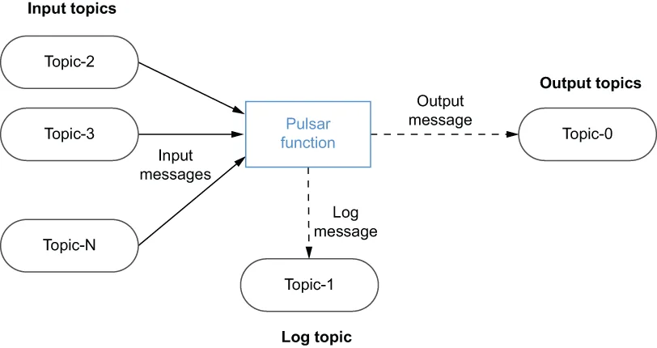

Included with Apache Pulsar is a lightweight computing engine named Pulsar Functions, which allows developers to deploy a simple function implementation in Java, Python, or Golang. This feature allows users to enjoy the benefits of serverless computing similar to those provided by AWS Lambda within an open source messaging platform, rather than being tied to a cloud provider’s proprietary API.
Apache Pulsar 内置了一个名为 Pulsar Functions 的轻量级计算引擎，它允许开发者以 Java、Python 或 Golang 部署一个简单的函数实现。这一特性让用户能够在一个开源消息平台内享受到类似于 AWS Lambda 所提供的无服务器计算的好处，而不必被绑定在某家云提供商的专有 API 上。
Pulsar Functions allows you to apply processing logic to data as it is routed through the messaging system itself. These lightweight compute processes execute natively within the Pulsar messaging system itself as close to the message as they can be and without the need for another processing framework such as Spark, Flink, or Kafka Streams. Unlike other messaging systems, which act as “dumb pipes” for moving data from system to system, Pulsar Functions provides the capability to perform simple computations on messages before they are routed to consumers. Pulsar Functions consumes messages from one or more Pulsar topics, applies a user-supplied function (processing logic) to each incoming message, and publishes the results to one or more Pulsar topics, as shown in figure 4.3.
Pulsar Functions 使你可以在数据通过消息系统本身被路由的同时，对其应用处理逻辑。这些轻量级计算进程原生地执行在 Pulsar 消息系统内部，尽可能地贴近消息本身，并且不需要借助 Spark、Flink 或 Kafka Streams 这类其他处理框架。与那些充当"哑管道"、只负责在系统之间搬运数据的其他消息系统不同，Pulsar Functions 提供了在消息被路由给消费者之前对其执行简单计算的能力。Pulsar Functions 从一个或多个 Pulsar 主题消费消息，对每条传入的消息应用一个由用户提供的函数（处理逻辑），并把结果发布到一个或多个 Pulsar 主题，如图 4.3 所示。

Figure 4.3 Pulsar Functions executes user-defined code on data published to Pulsar topics.
图 4.3 Pulsar Functions 对发布到 Pulsar 主题的数据执行用户自定义的代码。
Pulsar functions can be best characterized as Lambda-style functions that are specifically designed to use Pulsar as the underlying message bus. This is because they take several design cues from the popular AWS Lambda framework that allows you to run code without provisioning or managing servers to host the code. Hence, the common term for this programming model is serverless.
对 Pulsar function 最恰当的刻画是：它们是 Lambda 风格的函数，专门设计用来把 Pulsar 作为底层的消息总线。这是因为它们从广受欢迎的 AWS Lambda 框架中借鉴了若干设计思路——后者允许你运行代码而无需预置或管理承载该代码的服务器。因此，这种编程模型的通用叫法就是无服务器（serverless）。
The Pulsar function framework allows users to develop self-contained pieces of code and then deploy them with a simple REST call. Pulsar takes care of the underlying details required to run your code, including creating the Pulsar consumer and producers for the function’s input and output topics. Developers can focus on the business logic itself and not have to worry about the boilerplate code necessary to send messages with Pulsar. In short, the Pulsar Functions framework provides a ready-made computing infrastructure on your existing Pulsar cluster.
Pulsar function 框架允许用户开发出自包含的代码片段，然后用一个简单的 REST 调用把它们部署出去。Pulsar 会负责处理运行你的代码所需的底层细节，包括为函数的输入和输出主题创建 Pulsar 消费者和生产者。开发者可以专注于业务逻辑本身，而不必操心使用 Pulsar 发送消息所必需的样板代码。简而言之，Pulsar Functions 框架在你现有的 Pulsar 集群上提供了一套现成的计算基础设施。
4.2.1 编程模型